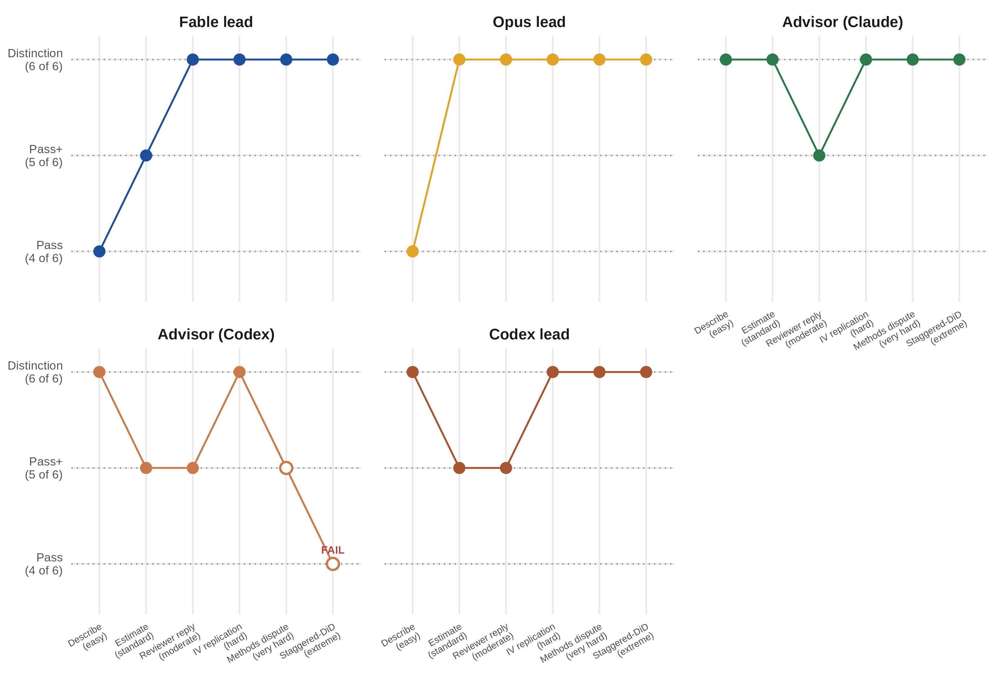

Each brief is a social-science analysis of public data that comes with an R package. Each brief was run in four ways, with Fable leading, with Opus leading, with one advisor consult, and with Codex leading. All runs use skills from the Open Science Skills. Each brief also has a reference solution and a scoring rubric, both written before any model ran (one T1 item was reworded after the first scoring). To run one yourself, pick a brief and a setup and run the command. Then compare the result with the answer key and our committed runs.
Read the report
Four ways to run a frontier model. The full findings from the July runs are on Pixels & Patterns.
The four setups
| Setup | How it works | When to use it | In the skills now |
|---|---|---|---|
| Fable lead | Fable plans the work and does the hard reasoning itself. Sonnet subagents do the mechanical work and Opus subagents the wide reasoning. A GPT model in Codex does the cross-checks. | Work too large for one context, such as a multi-file audit or a survey of many sources. These briefs did not test that. In July it was the cheapest and fastest Claude setup. | /oss:orchestrate in a Fable session. In July this was /oss:fable-orchestrate, and the cross-check went to GPT-5.6 Sol. It now goes to GPT-6 Astra. |
| Opus lead | The same skill, with Opus as the lead. | A task hard enough to strain Fable. In July it matched or beat the Fable lead on every brief, at a higher cost. | /oss:orchestrate in an Opus session, at medium effort. In July this was /oss:opus-orchestrate on Opus 4.8, run headless. |
| Advisor | A plain session does the work. Fable reviews it once, without editing anything, and the session revises. | The default for one well-scoped analysis. In July its review caught an analysis error before it shipped, a misread comparison-type label on the extreme brief. | /oss:advisor, from an Opus or Sonnet session. It refuses to run from a Fable session, since a second Fable is not a check. In Codex, $advisor asks GPT-6 Astra. In July the work ran mostly on Sonnet 5 (the T1 solve ran on Fable 5) and the review on Fable 5. |
| Codex lead | A GPT model leads in Codex. It sends bounded work to cheaper GPT models and can ask Claude for a check. | When you want the second opinion to come from a different vendor. | $orchestrate in a GPT-6 Astra or GPT-5.6 Sol session. In July this was $46-orchestrate, with a GPT-5.6 Sol lead and a Fable 5 peer. |
/oss:model-committee has also changed since July. GPT-6 Astra and Opus now each propose an answer and critique the other's, and a Fable chair settles the result.
Step 1Set up
You need Claude Code with the Open Science Skills (Getting started) and R with the packages below. The commands below clone this repository. The Fable and Opus leads use the Codex CLI for their cross-checks, and the Codex lead also needs the Codex version of the skills.
curl -fsSL https://claude.ai/install.sh | bash
claude plugin marketplace add scdenney/open-science-skills
claude plugin install oss@open-science-skills
# one-time: the subagents /oss:orchestrate hands work to
mkdir -p ~/.claude/agents
cp -n "$(ls -d ~/.claude/plugins/cache/open-science-skills/oss/*/ | sort -V | tail -1)"skills/orchestrate/agents/*.md ~/.claude/agents/
Rscript -e 'install.packages(c("projoint","ivdoctr","AER","car","causaldata","MatchIt","did","fixest","staggered","bacondecomp"))'
git clone https://github.com/scdenney/ai-for-research.git
cd ai-for-research/demos/orchestration-lab
# the Codex CLI: needed for the Codex lead and for the Fable and Opus leads' cross-checks
npm install -g @openai/codex
codex login
# Codex lead only: the Codex version of the skills
git clone https://github.com/scdenney/open-science-skills.git ~/open-science-skills
python3 ~/open-science-skills/plugin/scripts/install-codex.py --all --dry-run
python3 ~/open-science-skills/plugin/scripts/install-codex.py --allThe data ship with the R packages, so you do not need to download anything. The runs call hosted models, so they cost money. In July a run of one brief cost about $1 to $5 on the Claude setups. Keep ANTHROPIC_API_KEY unset so that headless runs charge your claude.ai plan instead of an API account.
Step 2Pick a brief
The six briefs are on four rungs of difficulty, and each rung is a different kind of problem.
| Rung | The briefs | Why they are there |
|---|---|---|
| easy–moderate | Three briefs on one conjoint dataset. The first two have fixed answers, and the third asks for a judgment call. | They check that a setup gets the facts right before it has to judge. |
| hard–very hard | Two well-known methods disputes with settled answers | The statistics are harder, but worked versions are widely published. All four setups reached the top band on both in July. |
| extreme | A recent methods debate, with a trap in the data that the brief warns about | It tests whether the agreement on the harder rungs came from the setups or from well-known tasks. In July it did not separate the setups. |
Each brief links to the exact prompt the models get.
- easyDescribe — document a community-choice conjoint design (projoint's
exampleData1) and check randomization balance. - standardEstimate — fit the AMCEs, cluster correctly, plot them with reference levels at zero.
- moderateReviewer reply — answer a referee who calls the headline crime finding an artifact of the AMCE baseline.
- hardIV replication — reproduce Acemoglu-Johnson-Robinson's colonial-origins 2SLS result (via ivdoctr) and stress it until the instrument breaks.
- very hardMethods dispute — adjudicate Dehejia-Wahba vs Smith-Todd on whether matching recovers the LaLonde experimental benchmark (via causaldata).
- extremeStaggered-DiD reconciliation — reconcile four modern difference-in-differences estimators on a real staggered minimum-wage rollout (Callaway-Sant'Anna's own
mpdta), and code never-treated units the way each package expects, which the brief warns about.
Step 3Pick a setup and run it
Pick a setup and a brief, and run the command below. It uses the current skills, which we have not yet run on the briefs. To leave the committed runs unchanged, it writes to a new folder called myruns/. The July run protocol, and the rules we followed for the captured runs, are in run.md. The 19 July advisor rerun is in rerun.sh. Headless runs use your own Claude Code permission settings, and a run that is not allowed to write files or call Rscript will stop.
The run writes to your myruns/ folder. It usually produces an R script and a memo, and often a figure. A headless Claude run also creates a JSON file whose total_cost_usd and duration_ms fields give the cost and the time. When the run finishes, score its output with the checklists below. You can then compare it with the committed run of the same brief in runs/.
Step 4Score your run
Each brief is scored on six items, and each item is a yes-or-no question. Four are core facts about the brief. The other two cover a judgment call and completeness, meaning work beyond getting the answer right. A run needs all four core items to Pass, the judgment item as well for Pass+, and all six for Distinction. Missing any core item fails the run. The definitions, and the item scores for every captured run, are in SCORING.md. The executed reference solutions are in reference/.
Describe — checklist
- coreStates 400 respondents, 8 tasks each, 2 profiles per task, 6,400 profile rows.
- coreNames all 7 attributes in readable form, not
att1..att7. - corePer-attribute level counts read 3, 3, 4, 2, 4, 6, 2.
- coreHandles the repeated, flipped task 1 correctly: it stays out of the 8-task count, so the data have 6,400 profile rows, not 7,200. A sentence naming it is not required.
- judgmentFlags Total Daily Driving Time as the lone imbalance; makes no "perfect balance" claim.
- completenessReports the exact max deviation from uniform (~1.94 pp), not only a min-max spread.
Estimate — checklist
- coreViolent Crime Rate is the largest |AMCE|, magnitude right for its stated scale (~25.1 pp corrected / ~16.5 uncorrected, never mislabeled).
- coreEvery large effect signs correctly; attribute ordering matches the key.
- coreStandard errors clustered on respondent id.
- coreEvery attribute's reference level fixed at zero; estimates presented as AMCEs.
- judgmentStates corrected or uncorrected as a deliberate, labeled choice.
- completenessNames the profile-level estimand and the IRR mechanism (tau ~0.17, ×1.52), explained not asserted.
Reviewer reply — checklist
- coreConcedes multi-level AMCEs shift under relabeling, backed by a number from these data.
- coreStates crime is binary, so a baseline flip only flips the sign — |AMCE| invariant.
- coreComputes marginal means (.626 / .374) and uses the baseline-free MM range as the ranking currency.
- coreCaps the claim: crime is the largest single driver, commute-comparable — never "dominates."
- judgmentFlags the ~1.4 pp crime-vs-commute gap as within noise — a statistical tie.
- completenessReports both magnitudes, uncorrected 16.5 and corrected 25.1 pp.
IV replication — checklist
- coreReproduces the headline: 2SLS 0.944, OLS 0.522, first-stage F 22.95.
- coreRuns the stress specs: controls keep the homoskedastic first-stage F > 10; dropping the neo-Europes pushes F to 8.65; Africa-only collapses to F = 0.30.
- coreFlags the weak-instrument specs as weak.
- coreNo overclaim about what the replication proves.
- judgmentStates the two-sided ceiling: a collapsed first stage neither confirms nor overturns the original result.
- completenessOne unified table across all five specifications.
Methods dispute — checklist
- coreAnchors exact: experimental benchmark +$1,794; naive CPS comparison −$8,498.
- coreRuns the specification curve including pre-earnings matching (demographics-only must fail; pre-earnings 1-NN lands near the benchmark).
- coreBenchmark-referenced results table.
- coreNo overclaim in the adjudication.
- judgmentLands the "helps but does not settle" verdict — favorable-specification recovery, not universal recovery.
- completenessBenchmark-referenced figure.
Staggered-DiD reconciliation — checklist
- coreAt least four ATT estimates, with every correctly specified one between −0.03 and −0.06 log points (reference: −0.037 to −0.047).
- coreCorrectly codes (or explicitly notes) that the
staggeredpackage needs never-treated units asInf, not the0the raw data anddiduse — the trap. - coreRuns a Goodman-Bacon decomposition and reports the share of weight on later-vs-earlier comparisons (~5.4%; 3–10% accepted), with the right inference (small, not zero).
- coreAn event-study / pre-trend check covering at least two pre-periods and at least one post-period.
- judgmentLands the calibrated middle: the TWFE critique is real in general and empirically small in this dataset — not "always fine" and not "always use the modern estimator."
- completenessFull comparison table across every estimator, plus the event-study time path (effect grows after impact).
What the July runs showed
The July test ran six briefs through six setups: the four above, a headless Codex run that could not hand work to a cheaper model, and an advisor run entirely in Codex. All 36 runs were scored against the rubrics, and two results stand out.
First, both orchestrated Claude leads scored only Pass on the easy brief. Neither flagged Driving Time as the one unbalanced attribute or reported the exact largest deviation from balance. Second, five of the six setups reached Distinction on the extreme brief, so the harder and newer task did little to separate them.
The sixth, the advisor run entirely in Codex, failed it. Its first draft dealt with the trap correctly. The reviewer then objected, reasonably, that the staggered estimator assumes randomized timing. In revising, the model removed that estimator, and with it the code that dealt with the trap. A sound second opinion cost the run the item the rubric was built to check. See the report or RESULTS.md for details.

Each result here is a single run, and the models do not give the same answer twice. Expect a different result when you re-run a brief.